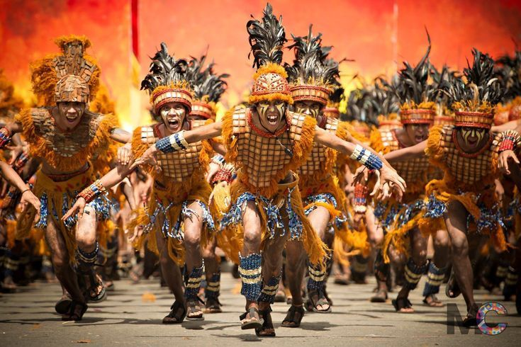

From colorful street parades to traditional dances and lively music, festivals in the Philippines are a celebration of culture, heritage, and community spirit. Join us as we explore some of the most vibrant festivals that showcase the rich diversity and traditions of the Filipino people.
Sinulog Festival
The Sinulog Festival, nestled within the heart of Cebu City, Philippines, stands as a vibrant testament to the fusion of indigenous roots and Christian traditions. Originating from pre-colonial pagan rituals venerating ancestral deities, the festival seamlessly integrated with Christian beliefs following Spanish colonization. Today, it serves as an annual homage to the Santo Niño, the Child Jesus, celebrated through spirited street dances, colorful processions, and devout expressions of faith.
At its essence, the Sinulog Festival is a jubilant celebration of spirituality and community. Locals and visitors alike converge upon Cebu's streets, adorned in elaborate costumes and fueled by the pulsating rhythms of drums and chants. With each graceful sway and intricate step of the Sinulog dance, participants invoke blessings from the Santo Niño and express gratitude for prayers answered, embodying a profound connection between the divine and the earthly.
Months of meticulous preparation precede the festival, as communities meticulously craft costumes, rehearse dance routines, and orchestrate logistical arrangements. The crescendo of anticipation builds towards the festival's climax—the grand street parade. Against the backdrop of Cebu's historic landmarks, the Sinulog Festival unfolds in a kaleidoscope of colors and sounds, uniting people from all walks of life in a joyous celebration of faith, heritage, and communal spirit.
Ati-Atihan Festival
The Ati-Atihan Festival, deeply rooted in the cultural fabric of Kalibo, Aklan, embodies the rich tapestry of Philippine heritage and spirituality. Originating from ancient animistic rituals of the indigenous Aeta tribes, the festival underwent a transformative evolution with the arrival of Spanish missionaries in the 16th century. Today, it stands as a vibrant fusion of pagan traditions and Catholic influences, symbolizing the enduring resilience and adaptability of Filipino culture.
At its core, the Ati-Atihan Festival pulsates with a rhythmic vitality that resonates throughout the streets of Kalibo. Dancers adorned in vibrant tribal attire, their bodies painted in intricate patterns resembling the Aeta warriors, move in unison to the hypnotic beat of drums. The festival's exuberant atmosphere transcends barriers of language and nationality, drawing participants and spectators from across the globe to partake in its jubilant revelry.
Months of meticulous preparations precede the Ati-Atihan Festival, as communities meticulously design costumes, rehearse choreographed routines, and organize elaborate processions. As the festival reaches its zenith, the streets of Kalibo come alive with a kaleidoscope of colors, sounds, and aromas. Against the backdrop of ancestral traditions and modernity, the Ati-Atihan Festival serves as a vibrant testament to the enduring spirit of unity, faith, and cultural heritage ingrained in the Filipino psyche.
Pahiyas Festival
The Pahiyas Festival, nestled within the quaint town of Lucban, Quezon, is a colorful celebration that epitomizes the vibrant spirit of Filipino agricultural abundance and religious devotion. Originating from ancient indigenous rituals of thanksgiving to the rice deity, the festival has evolved over centuries into a dazzling showcase of creativity, community, and cultural heritage.
At its heart, the Pahiyas Festival is a jubilant expression of gratitude for bountiful harvests and divine blessings bestowed upon the land. Each year, the streets of Lucban come alive with a riot of colors as houses are adorned with intricately crafted decorations made from agricultural produce, particularly rice grains and fruits. The festival's lively atmosphere reverberates with the sounds of music, laughter, and the aroma of traditional delicacies being prepared.
Preparations for the Pahiyas Festival commence months in advance, as residents meticulously plan and execute their elaborate house decorations. The culmination of these efforts is the grand procession, where locals and visitors alike marvel at the ingenuity and artistry displayed in every corner of the town. Against the backdrop of Lucban's picturesque landscapes and centuries-old heritage, the Pahiyas Festival serves as a vibrant celebration of abundance, community spirit, and the enduring bond between humanity and the land.
Dinagyang Festival

The Dinagyang Festival, held annually in Iloilo City, Philippines, is a dynamic celebration that pulsates with the rhythm of tradition, culture, and spirituality. Originating from ancient indigenous rituals venerating the Ati tribe's revered patron, the Sto. Niño (Child Jesus), the festival has evolved into a vibrant showcase of faith, heritage, and communal unity.
At its core, the Dinagyang Festival is a joyous expression of gratitude and devotion to the Sto. Niño, celebrated through captivating street performances, colorful costumes, and exuberant music and dance. Participants, clad in elaborate Ati-inspired attire, move to the beat of tribal drums and chants, embodying the spirit of the Ati warriors who once inhabited the land.
Months of meticulous preparation precede the Dinagyang Festival, as communities immerse themselves in crafting intricate costumes, choreographing dance routines, and organizing cultural events. The festival's highlight is the Ati-Atihan street parade, where revelers from different tribes and contingents converge to showcase their artistic prowess and pay homage to their shared heritage. Against the backdrop of Iloilo's historic streets and landmarks, the Dinagyang Festival transcends mere spectacle, serving as a vibrant celebration of faith, culture, and the enduring spirit of the Filipino people.
MassKara Festival
The Masskara Festival, held annually in Bacolod City, Philippines, is a dazzling spectacle that illuminates the spirit of resilience, creativity, and unity. Emerging from a period of economic hardship in the 1980s, the festival serves as a beacon of hope and celebration, showcasing the unwavering spirit of the Bacolodnons amidst adversity.
At its heart, the Masskara Festival is a vibrant mosaic of colors, music, and dance, symbolizing the indomitable Filipino spirit. Participants don intricately crafted masks adorned with radiant smiles, embodying the city's resilience and optimism in the face of challenges. The festival's lively street performances, pulsating music, and elaborate costumes create an atmosphere of joy and camaraderie, inviting locals and visitors alike to revel in the festivities.
Preparations for the Masskara Festival begin months in advance, as communities come together to design elaborate masks, choreograph dance routines, and organize cultural events. The festival culminates in a grand street parade, where the streets of Bacolod come alive with a riot of colors and exuberant energy. Against the backdrop of smiling faces and intricately designed masks, the Masskara Festival serves as a poignant reminder of the resilience, creativity, and unwavering spirit of the Bacolodnons, making it a truly unforgettable experience for all who participate.
.jpg)